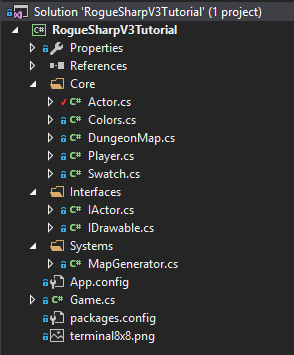
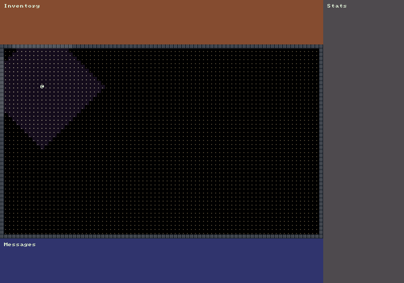

Player
During this tutorial we’ll create interfaces for Actors and for Drawing things. We’ll then create a simple Player class that implements both of our new interfaces. We’ll draw the Player and his field of view to the screen but we will not get into accepting keyboard input and moving the Player until next time.
Creating the Interfaces
There are two new interfaces that we want to create. In C# interfaces are used to define a set of functionality or a group of related behaviors. You can think of them as a contract that classes must follow. By implementing the interface a Class is agreeing to the contract and must implement those methods and behaviors. We will always prefix our interfaces with the letter ‘I’ as is common in C#.
IActor Interface
The first interface we will create will be IActor. For now it will only have two properties, Name and Awareness. The Awareness property will be used when calculating field-of-view to determine the maximum distance the Actor is aware of, can see or sense.
Create a new folder called Interfaces and then create a new interface in the folder called IActor.cs. Place the following code inside the new file.
namespace RogueSharpV3Tutorial.Interfaces
{
public interface IActor
{
string Name { get; set; }
int Awareness { get; set; }
}
}
IDrawable Interface
The next interface we will define will be IDrawable. The properties that we need to draw a cell in the console are a Color, Symbol, and the X and Y coordinates of the cell. We also want to have a Draw method that will take the RLConsole to draw to as well an IMap. Notice that we don’t require a concrete Map class but we will accept any class that follows the IMap contract. The IMap is important because that will allow us to calculate field-of-view.
namespace RogueSharpV3Tutorial.Interfaces
{
public interface IDrawable
{
RLColor Color { get; set; }
char Symbol { get; set; }
int X { get; set; }
int Y { get; set; }
void Draw( RLConsole console, IMap map );
}
}
Actor Base Class
Now that we have defined our interfaces we’ll make a base class called Actor that implements both of our interfaces. In C# a class can only inherit from a single class. It can however implement as many interfaces as you want.
Start by creating a new class in the Core folder called Actor.cs. It should implement both IActor and IDrawable. Place the following code in Actor.cs:
public class Actor : IActor, IDrawable
{
// IActor
public string Name { get; set; }
public int Awareness { get; set; }
// IDrawable
public RLColor Color { get; set; }
public char Symbol { get; set; }
public int X { get; set; }
public int Y { get; set; }
public void Draw( RLConsole console, IMap map )
{
// Don't draw actors in cells that haven't been explored
if ( !map.GetCell( X, Y ).IsExplored )
{
return;
}
// Only draw the actor with the color and symbol when they are in field-of-view
if ( map.IsInFov( X, Y ) )
{
console.Set( X, Y, Color, Colors.FloorBackgroundFov, Symbol );
}
else
{
// When not in field-of-view just draw a normal floor
console.Set( X, Y, Colors.Floor, Colors.FloorBackground, '.' );
}
}
}
Implementing the properties should be straightforward. They just have public getters and setters. The most interesting part will be the Draw() method because it needs to inspect the IMap for explored cells and cells in field-of-view so that it can draw the appropriate symbols.
Player Color
We need to establish a Color for our Player. Open Colors.cs and add the following line:
public static RLColor Player = Swatch.DbLight;
Player Class
It’s time to create the Player class. In the Core folder make a new class called Player.cs. We want it to have a base class of Actor so that it will automatically get the Draw() method and all the necessary properties. The code should look like this.
namespace RogueSharpV3Tutorial.Core
{
public class Player : Actor
{
public Player()
{
Awareness = 15;
Name = "Rogue";
Color = Colors.Player;
Symbol = '@';
X = 10;
Y = 10;
}
}
}
You’ll see that all we have to do to make the Player unique from other Actors is to define unique values for our properties. In this case the Player can see 15 cells so the Awareness is 15. We’re also setting the starting position to 10, 10 and the Color to the one we defined earlier. The Symbol is the standard ‘@’ character from the original Rogue. Feel free to adjust any of these values to anything you want.
If you’ve been following along with the tutorial your project structure should now look like this:

Player Field-of-View Method
Open DungeonMap.cs and create a new method called UpdatePlayerFieldOfView() which will be called when we position the Player
// This method will be called any time we move the player to update field-of-view
public void UpdatePlayerFieldOfView()
{
Player player = Game.Player;
// Compute the field-of-view based on the player's location and awareness
ComputeFov( player.X, player.Y, player.Awareness, true );
// Mark all cells in field-of-view as having been explored
foreach ( Cell cell in GetAllCells() )
{
if ( IsInFov( cell.X, cell.Y ) )
{
SetCellProperties( cell.X, cell.Y, cell.IsTransparent, cell.IsWalkable, true );
}
}
}
Adding the Player to the Game
The last thing that we have to do in this tutorial is add the Player to the Game. Open Game.cs and add a Player property just above our existing DungeonMap property.
public static Player Player { get; private set; }
Next we need to construct a new Player in our Main() method. Don’t forget to update the field-of-view by calling DungeonMap.UpdatePlayerFieldOfView().
Player = new Player();
// The next two lines already existed
MapGenerator mapGenerator = new MapGenerator( _mapWidth, _mapHeight );
DungeonMap = mapGenerator.CreateMap();
// End of existing code
DungeonMap.UpdatePlayerFieldOfView();
We’re almost done. The last thing we need to do is call Player.Draw() in our OnRootConsoleRender() method.
Player.Draw( _mapConsole, DungeonMap );
If all went well when you start your game you should see this:

Code on GitHub
As always the code for the tutorial series so far can be found on GitHub:
Bored waiting for the next tutorial? The complete tutorial project is already finished and the source code is available on Github:
- Sample Roguelike game using RogueSharp and RLNet console
- Sample Roguelike game using RogueSharp and SadConsole